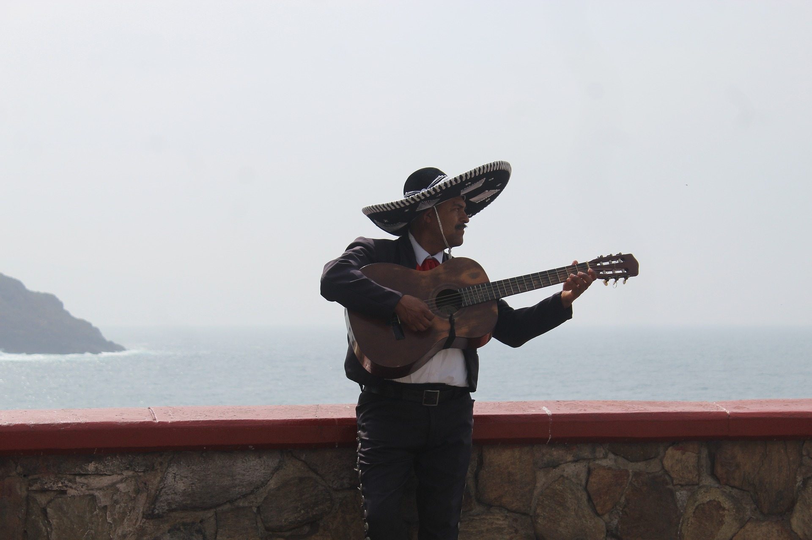

La música en la sociedad
El mundo ha presenciado la evolución del arte generación tras generación, y así mismo la aparición y desaparición de civilizaciones con distintas culturas. Es curioso ver que todas compartían algo: la creación de la música. En el siguiente ensayo analizo su importancia en las civilizaciones.
Concepto breve de la música
Primero definamos que es música: Es la mezcla de armonía, melodía y el ritmo de manera entendible y atractiva al oído humano. Nombrada como arte o descrita como tal.
El arte es una rama de la herencia cultural, pero tardaríamos definiendo que es al arte y porque el rock, Kpop, clásica, reggaetón o grupera son odiadas o aburridas por ciertas comunidades, que con base a su cultura les dará estas etiquetas. Como sería enseñarle trap a Mozart, le sería muy difícil comprenderlo.

¿Sabías que la canción infantil “Los pollitos dicen” es similar al himno de Israel, pero con tonalidad menor?
Sus efectos
Es el lenguaje global de anteriores y próximas generaciones. Porque no necesita de palabras para transmitir sentimientos, además nos otorga una identidad. Por otro lado, en México he notado que el Reggaetón, trap, banda, grupera en verdad si dañan de cierta manera una comunidad. Somos unos de los países con más accidentes aéreos, ¿y esto qué tiene que ver? Que la mayoría son por la falta de comunicación entre el copiloto y el piloto, ya que el copiloto percibe ciertas limitaciones para tener una postura firme. Cuando se relaciona con la música, se puede deducir que las canciones nos comunican que si carecemos de dinero, drogas, sexo y otros lujos, no somos personas exitosas, que no somos nadie a comparación de ellos y hay que mantener cierto respeto.

La manipulación del mito de la meritocracia, uso a favor de la religión, el apoyo del contrabando, el narcotráfico y también la valoración de la familia y amigos han invadido gran parte de la cultura mexicana.
La música siempre será la representación de la sociedad, y vivimos en un mundo donde todo puede ser arte, sin embargo, el mejor arte es el que ayuda.